Windows 10安装教程（实体机安装）
下载系统并制作安装介质
首先先去微软官网下载镜像
https://www.microsoft.com/zh-cn/software-download/windows10
可以看到 这里没有直接的下载链接 浏览器按F12进入开发者模式 点这个
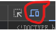
再刷新下 可以看到 已经有选择版本的地方了
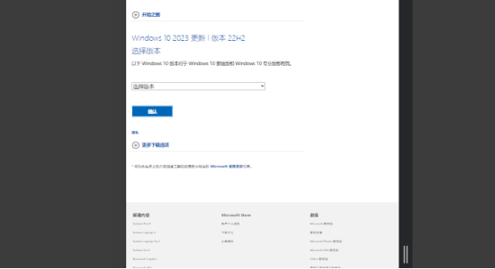
选择这个
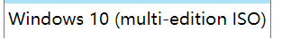
这里选择需要的语言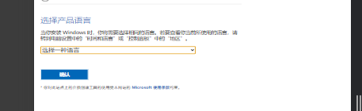
这样就有下载链接了
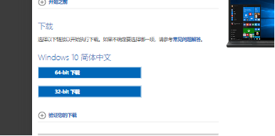
选择64-bit下载 下载完后制作安装介质 制作完成后 制作安装U盘 可以使用Rufus（https://github.com/pbatard/rufus/releases/download/v4.5/rufus-4.5.exe）来制作启动U盘 插入一个闲置U盘（8G或以上）打开Rufus 选择刚刚下载好的ISO文件 然后点击开始
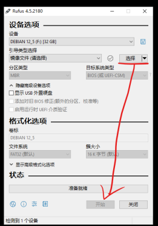
然后启动你的电脑 一直按你电脑的启动键 这里附上一张图
进入选择界面选择你的U盘 进入安装程序
开始安装系统
你可能会看到这个界面
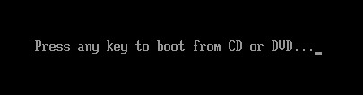
这时按任意键进入安装系统
然后等待一会 进入这个页面
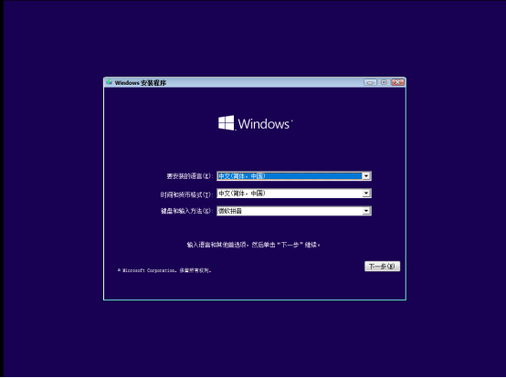
点击下一步
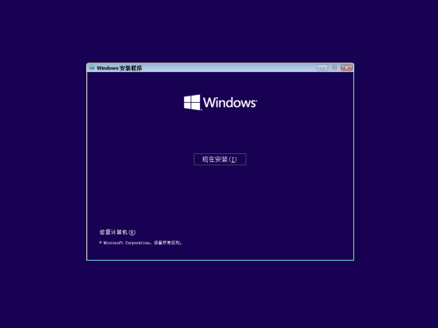
点击现在安装
稍等片刻进入这个界面
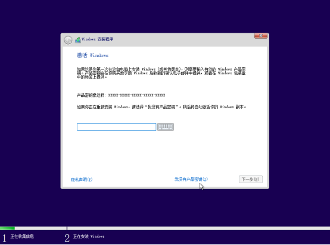
这里选择我没有产品密钥
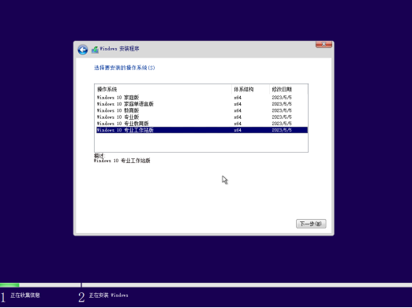
这里选择一个版本（推荐专业工作站版）
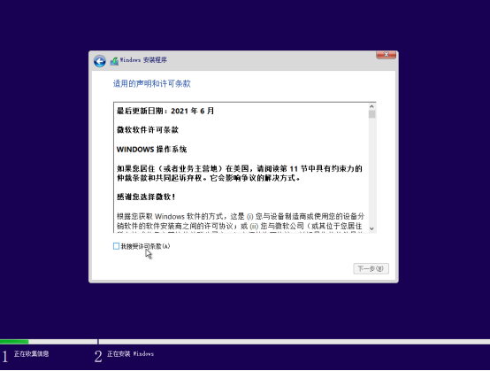
这里点击我接受许可条款后点下一步
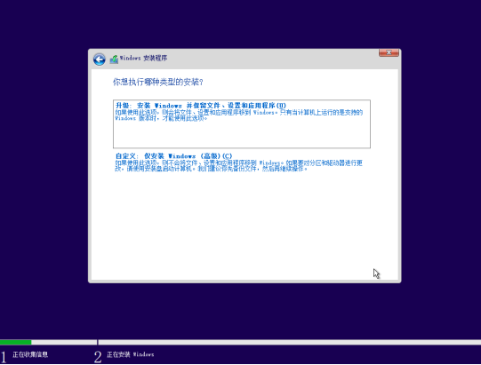
这里选择自定义
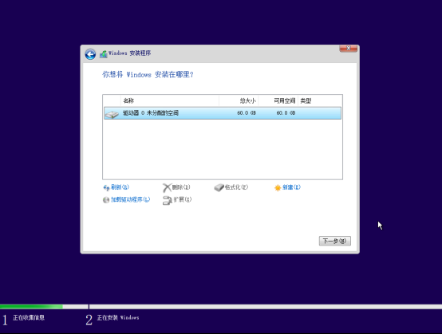
这里选择好硬盘后点下一步（当然你也可以在这里分个区 如果这里没有你的硬盘 可以点击下面的加载驱动程序来加载你下载好的第三方驱动 或者去检查下硬盘状态）
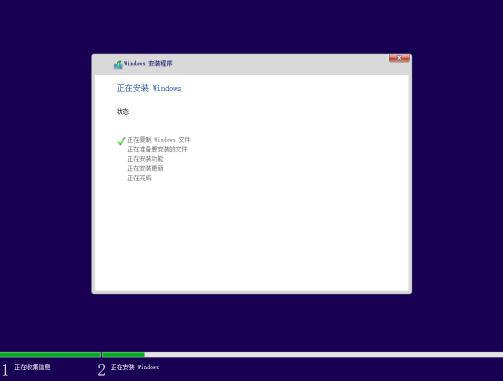
这里等待一会（可能需要很长时间）
等待电脑自动重启后拔掉U盘或其他安装介质 等待进入OOBE
安装后的基础配置
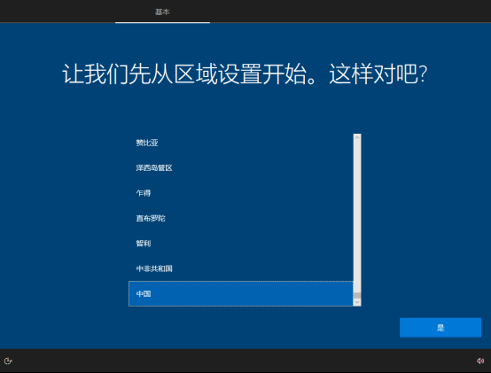
如上图 这就已经进入OOBE界面了 开始基础配置 先选择区域
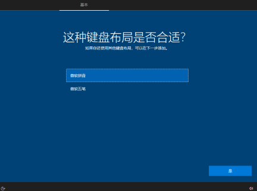
再选择键盘布局
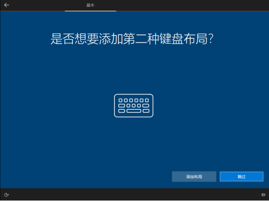
这里如果你不需要添加第二种键盘布局 那就点跳过 如果需要 选择后添加即可
这之后会配置网络 笔记本可能会要求连接WIFI 这里不要连网 台式机可以拔掉网线 笔记本先别连WIFI（因为这之后要登录微软账户 虽然能跳过 但麻烦 作者懒得写）

这里点我没有Internet连接
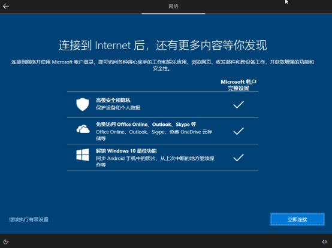
这里点继续执行有限设置
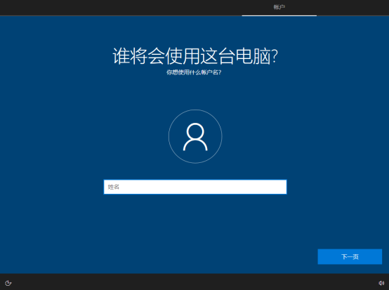
这里输入一个用户名
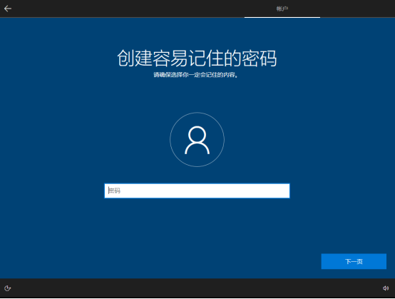
这里输入一个密码（如果你需要）
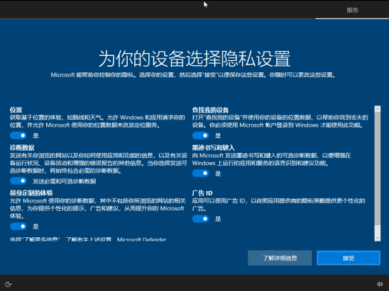
这里把所有选项取消选择
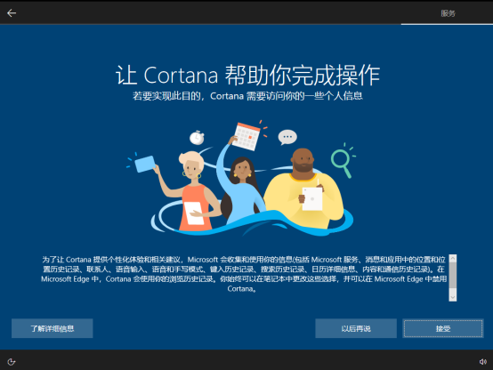
这里点以后再说

这里稍等一会
对系统的设置
这时就可以联网了
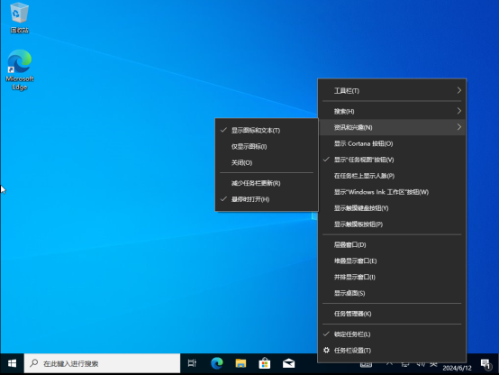
这里右键任务栏 把咨询和兴趣关掉（不关容易让任务栏卡顿）
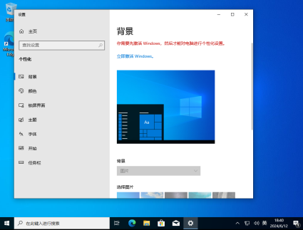
右键桌面 点个性化 点击主题
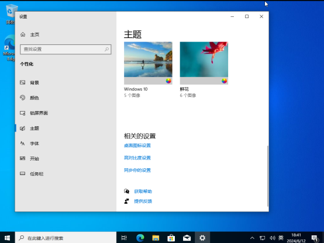
这里点击桌面图标设置

勾选你需要的图标
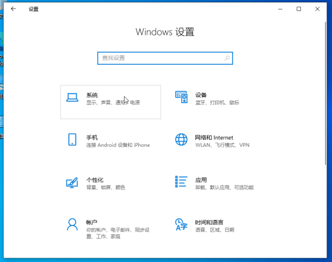
回到设置主页 点击系统
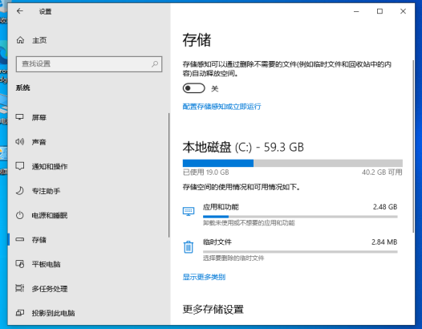
进入存储 点击配置存储感知或立即运行
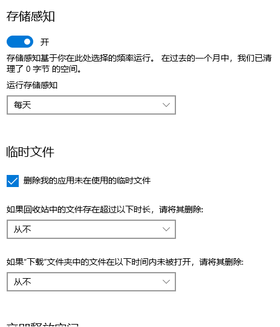
改成上图的设置
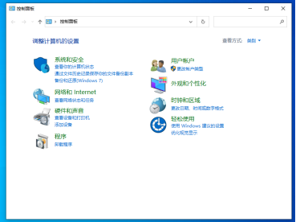
打开控制面板 选择硬件和声音里的电源选项
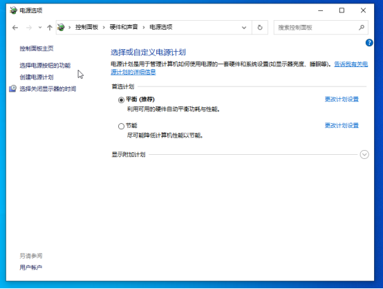
点击选择电源按钮功能
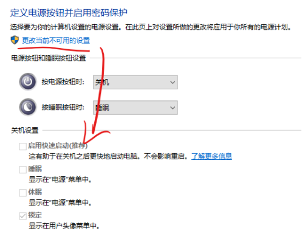
点击当前不可用设置后取消勾选启用快速启动 然后保存修改
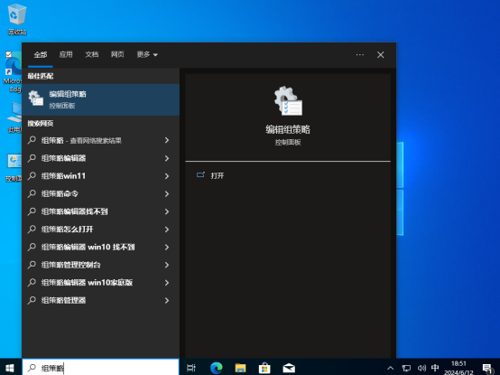
搜索组策略并打开
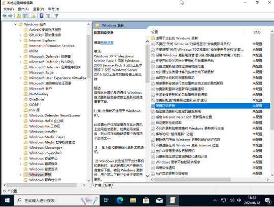
在计算机配置-管理模板-Windows组件-Windows更新里 找到配置自动更新 双击点开
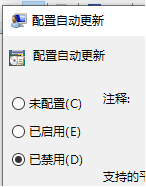
选择已禁用（这样就能关掉烦人的Windows自动更新啦）
然后点应用 再点确定
最后 去安装一下自己电脑的驱动程序（这玩意作者没法写 可以去自己电脑或电脑配件的官网下载）就可以啦
此网站由阿里云Cloudflare驱动